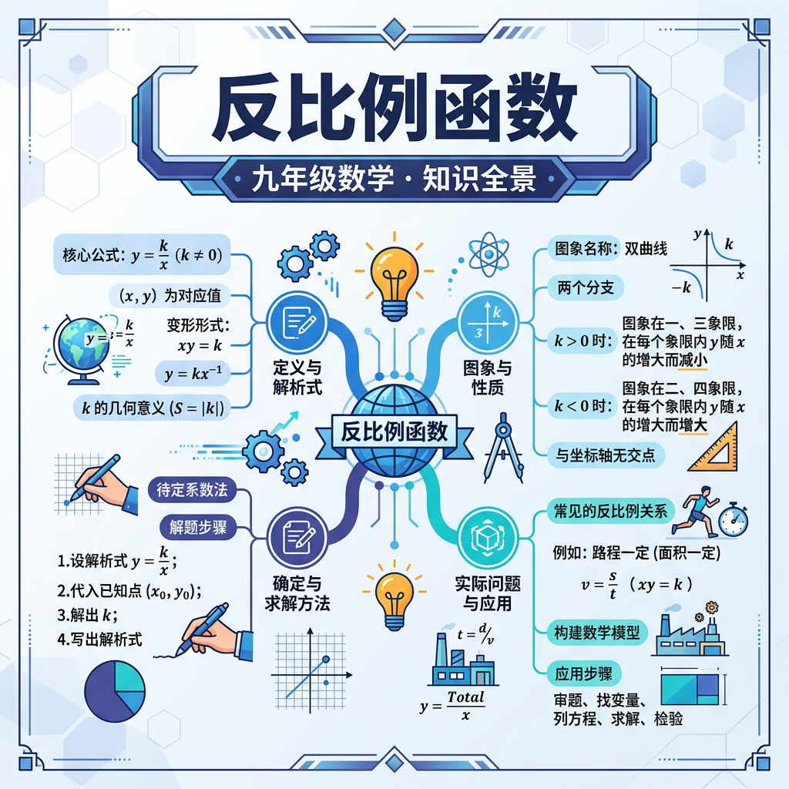

1. 下列哪个式子是反比例函数？
2. 反比例函数 y=6/x，当 x=2 时，y=？
3. 反比例函数中，x 不能等于？
关键条件：
✅ 是反比例函数
❌ 不是反比例函数
🏋️ 即时练习：下列是反比例函数的是？
| k范围 | 图象位置 | 各支变化趋势 |
|---|---|---|
| k > 0 | 一、三象限 | 各支内：x增大，y减小 |
| k < 0 | 二、四象限 | 各支内：x增大，y增大 |
| |k|越大 | 离原点越远 | 曲线越"宽" |
🏋️ 即时练习：反比例函数 y = -3/x 的图象在哪些象限？
例题：从家到学校距离 12 km，设速度为 x (km/h)，时间为 y (h)。
（1）写出函数关系式：y = 12/x（x>0）
（2）速度为 4 km/h 时，需要多久？y = 12/4 = 3（小时）
（3）想在 1.5 小时内到达，速度至少多少？1.5 = 12/x，x = 8（km/h）
🏋️ 即时练习：某矩形面积为 24 cm²，长为 x cm，宽为 y cm。当 x=6 时，y=？
工厂要生产 360 件产品，设每天生产 x 件，完成所需天数为 y 天。
1. 反比例函数 y=k/x（k>0），x 从 1 增大到 2 时，y 如何变化？
2. 若 y=k/x 过点 (-2, 3)，则 k = ？
3. 反比例函数图象的两支分别在哪两个象限（k>0）？
4. 反比例函数中，若 x₁ < x₂ < 0 且 k > 0，则 y₁ 与 y₂ 的大小关系？